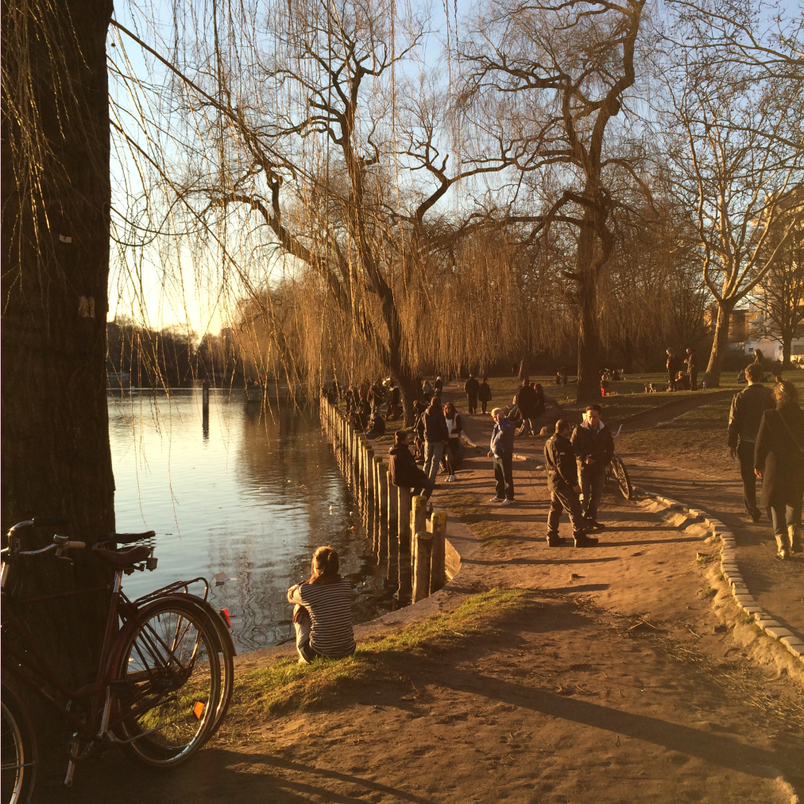

#health

Turn your phone and laptop completely off, and put them away somewhere hidden. It will feel somewhat pointless (sadly) and unproductive, at list the first few times. Try walking outside without. Don’t bring a shut-off phone in your pocket, its presence will ruin it. After a while you notice. Time feels slower. You sense your surroundings. You’re able to actually taste the nice coffee you bought, not treating it as something secondary to the picture you took. Try it for a day. Enjoy.